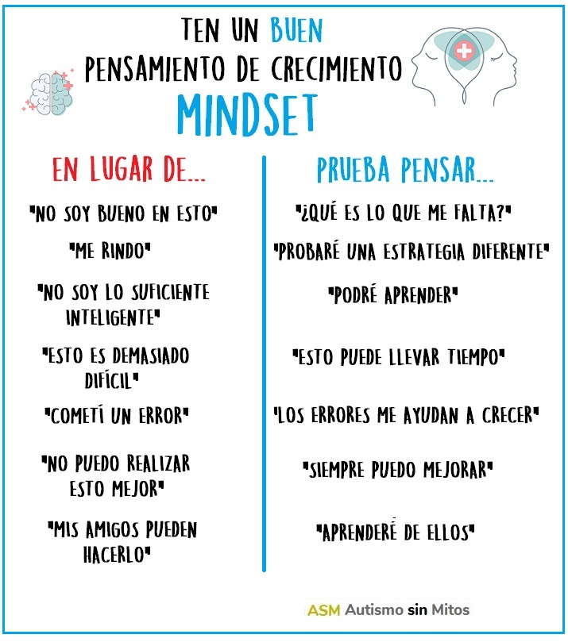
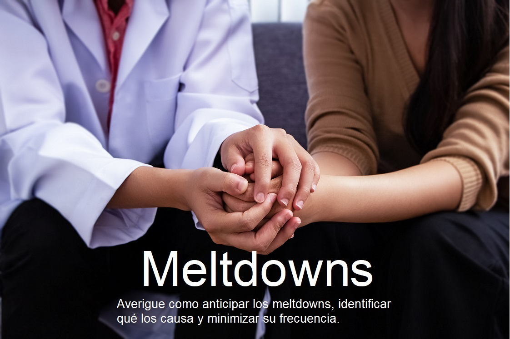

Niveles de estrógeno
No hay una epidemia de autismo.
A menudo aparecen estudios que "vinculan" el autismo con determinados acontecimientos. Hay que tener cuidado y no saltar a conclusiones, aún cuando sean estudios serios. Por ejemplo, estaba viendo un estudio que vincula altos niveles de estrógenos en el embarazo con casos de autismo. Suponiendo que el estudio sea válido, y sobre un número significativo de casos, aún así no quiere decir que un alto nivel de estrógenos CAUSE el autismo. Por ejemplo, podría ser que el futuro bebé ya tenga genéticamente autismo y esa diferencia cause elevación de estrógenos en la madre. Por eso es importante no confundir correlación con causa.
Pero además: ¿El estudio analiza si hubo casos de alto estrógeno que NO generara autismo? ¿Hubo casos de autismo que NO tuvieran altos niveles de estrógeno en el embarazo? ¿Hubo casos de alto estrógeno que generaran OTROS síndromes o problemas, en vez o además de autismo? Con unas pocas preguntas nos damos cuenta que además de la correlación hay que estudiar muchas cosas... la correlación puede ser incluso mera coincidencia.
Autoestima
Tienes que aceptarte como eres.
Una cosa que he notado en muchos autistas y que les trae problemas en la vida diaria, es que les da vergüenza ser como son. ¿Se equivocan? Se quieren morir. ¿Se olvidaron algo? No saben cómo disculparse y pierden el hilo de lo que estaban haciendo. ¿Los miran raro? Se sienten mal. Sé que nada que les diga va a influir en eso, pero... ¡Al diablo los demás! ¿Me olvidé algo? No soy perfecto, todos cometemos errores, especialmente bajo estrés o apurados. ¿Me mirás raro? Mirate en el espejo, para mí raro sos vos. ¿Me equivoqué? No importa, trataré de aprender del error y que no suceda la próxima. Mientras tanto, no soy un robot, me viene bien que me ayudes y acepto tu ayuda.
Soy como soy y NO me tienen que dar vergüenza mis "fallas". No me olvido a propósito, ciertas áreas de mi memoria no andan tan bien como podría esperarse porque soy autista. No me equivoco a propósito, me distraigo fácilmente porque soy autista. No actúo "raro" a propósito, necesito realizar ciertas actividades o movimientos para mantenerme en un nivel aceptable de funcionamiento, porque soy autista.
NO TENGO VERGÜENZA de ser autista. Y eso, amigos, es la clave de los famosos "días del orgullo" autista. Estar orgulloso es lo opuesto de tener vergüenza, y en ese sentido es lo que buscan difundir esas actividades. Muchos preguntan ¿y de qué hay que estar orgulloso? Pues yo les digo, orgulloso en el sentido de aceptar ser como somos y NO TENER VERGÜENZA, porque no hay nada por el que avergonzarse. Vergüenza tienen que tener quienes no nos aceptan como somos o no nos ayudan si lo necesitamos.
Mindset
¡El modo en que piensas importa!
Hace más de 30 años, Carol Dweck y sus colegas se interesaron en las actitudes de los estudiantes acerca del fracaso. Se dieron cuenta de que algunos estudiantes se recuperaron mientras que otros estudiantes parecían devastados incluso por los contratiempos más pequeños. Después de estudiar el comportamiento de miles de niños, la Dr. Dweck acuñó los términos "mentalidad fija" ("fixed mindset") y "mentalidad de crecimiento" ("growth mindset") para describir las creencias subyacentes que las personas tienen sobre el aprendizaje y la inteligencia. Cuando los estudiantes creen que pueden ser más inteligentes, entienden que el esfuerzo los hace más fuertes. Por lo tanto, dedican más tiempo y esfuerzo, y eso conduce a un mayor logro.
Los avances recientes en neurociencia nos han demostrado que el cerebro es mucho más maleable de lo que nunca supimos. La investigación sobre la plasticidad cerebral ha demostrado cómo la conectividad entre las neuronas puede cambiar con la experiencia. Con la práctica, las redes neuronales desarrollan nuevas conexiones, fortalecen las ya existentes y pueden construír un aislamiento que acelera la transmisión de impulsos. Estos descubrimientos neurocientíficos nos han demostrado que podemos aumentar nuestro crecimiento neuronal mediante las acciones que tomamos, como usar buenas estrategias, hacer preguntas, practicar y seguir buenos hábitos de nutrición y sueño.
Crisis autista (Meltdown)
Las crisis del autismo no son lo mismo que los berrinches.
Un Meltdown o crisis es "una respuesta intensa a situaciones abrumadoras". Ocurre cuando alguien se siente completamente abrumado por su situación actual y pierde temporalmente el control del comportamiento. Esta pérdida de control puede expresarse verbalmente (por ejemplo, gritar, gritar, llorar), físicamente (por ejemplo, patear, arremeter, morder) o de ambas maneras.
No es un comportamiento malo o travieso y no debe considerarse como tal. Cuando una persona está completamente abrumada, y su condición significa que es difícil expresar eso de manera apropiada, es comprensible que el resultado sea una crisis.
Las crisis no son la única forma en que una persona en el espectro autista puede expresar sentirse abrumada. Otros comportamientos que pueden aparecer son menos explosivos pero son igualmente comunes, como negarse a interactuar, retirarse de las situaciones que encuentran desafiantes o evitarlos por completo.
Cura con cannabis
¿Se cura el autismo con aceite de cannabis?
El aceite de cannabis (no "el cannabis" directamente... ni la hoja ni fumarla, sino el CBD), tiene efectos comprobados científicamente. Los efectos comprobados son: anticonvulsivo y ansiolítico/antipsicótico. No tiene otro efecto comprobado, por lo tanto no "cura" nada. El efecto anticonvulsivo claramente es beneficioso para quienes sufren convulsiones. Y el efecto ansiolítico, ayuda sin duda a quienes por problemas de descontrol emocional o nervioso sufren por los síntomas relacionados con la ansiedad extrema. Al reducir la hiperpercepción que tenemos muchos autistas, el sujeto se puede relajar, reducir el stress y por lo tanto reducir los signos más notables del autismo.
¿Esto es bueno o malo? Para los padres sin duda es bueno, de repente tienen un hijo que responde mejor y aparentemente sufre menos. El individuo posiblemente se sienta mejor y más relajado.
Las contras: Los efectos a largo plazo son desconocidos. NO SE SABE si la persona que usa habitualmente aceite de cannabis dentro de 20 años va a estar como si nada, o si va a desarrollar cualquier problema de salud (acv, cardiovascular, tumores, etc.). El aceite al ser artesanal (no está industrializado) puede tener cualquier impureza, adulteración o concentración, comenzando por la calidad de las hojas y el proceso para extraer el aceite. Y si el sujeto es un niño, está dependiendo de una sustancia para regularse en vez de hacerlo por sí mismo; con lo cual en el futuro seguirá sin poder regularse y dependiendo de esa sustancia. Tampoco se puede descartar el efecto placebo.
Literalidad

Los problemas de comunicación son DE AMBOS LADOS.
La literalidad es una característica muy común en las personas en el espectro autista. Y el problema con ello no es realmente de la persona, sino de quien se comunica con ella. El que se comunica "literalmente", en realidad está siguiendo las reglas sintácticas y semánticas del idioma para comunicarse de manera correcta; el inconveniente es de quien no habla diciendo lo que debería decir. "Hay que colgar la ropa", dirá una persona. "Está bien", puede contestar un literal, aceptando que sí, hay que colgarla. Jamás se le ocurrirá que la otra persona le está pidiendo a Él que tiene que hacerlo, porque no se lo está DICIENDO.
En la escuela, y en casa: La combinación de literalidad y disfunción ejecutiva es un obstáculo para la ejecución de tareas que deben guardarse en forma de listas en la memoria. Cuando se le solicita algo a un autista (y no necesariamente un niño), debemos 1) hacerlo con cuidado de que lo que decimos no pueda ser malinterpretado si se toma literalmente. 2) No ser vagos o ambiguos sino bien específicos. 3) No resumir tareas complejas en una sola orden, sino especificar bien todos los pasos. 4) Si los pasos son más de 3, anotarlos!
Por ejemplo: Mal/ambigüedad: Hacé la tarea. (¿Qué tarea? ¿Por dónde empiezo?) Bien: Abrí la carpeta de matemáticas y fijate lo que anotaste la última clase. ¿Te quedó algo pendiente para hacer? ¿Y en lengua? ¿Y en sociales? (etc.)
Mal/literalidad: Servite agua de la heladera. (¿Agua de la heladera, qué es eso? ¿Dónde tiene agua la heladera?) Bien: En la heladera hay una botella con agua fría, servite de esa botella. Agarrá un vaso limpio del estante de los vasos.
Psicoterapia